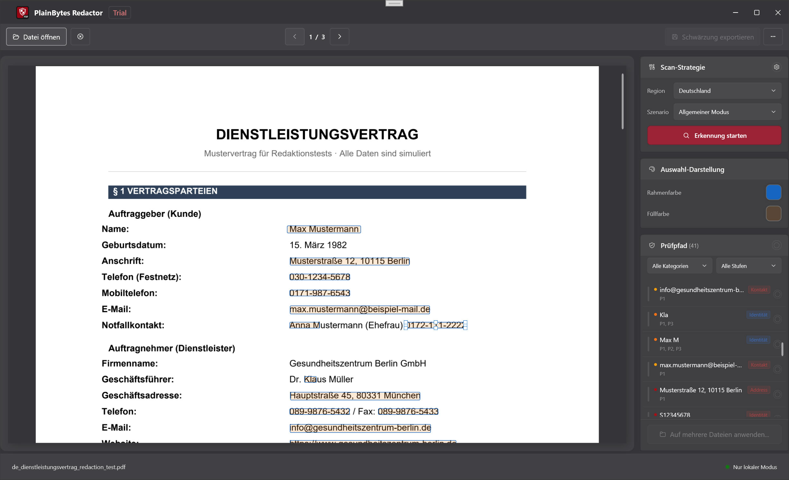

Schnellstart
Das Video unten zeigt den kompletten Ablauf von Anfang bis Ende: automatische Erkennung und bei Bedarf manuelle Ergänzung.
1Wofür diese App gedacht ist
1.1 Echte Schwärzung statt nur darübergelegter Balken
Für Compliance und Sicherheit bedeuten diese beiden Ansätze sehr unterschiedliche Dinge:
| Aspekt | Darübergelegte Vorschau (der übliche „schwarze Balken“) | Echte Schwärzung (darauf zielt diese App ab) |
|---|---|---|
| Im PDF | Text, Vektoren oder Bilder können weiterhin in der Datei stecken und sind oft nur von einer anderen Grafik überdeckt. | Treffende Inhalte werden aus dem Inhaltsstrom entfernt, sodass sie mit normaler Analyse nicht wiederherstellbar sind. |
| Kopieren / Suchen | Je nach Werkzeug lässt sich „versteckter“ Text trotzdem kopieren. | Ziel ist, dass auswählbarer Text die sensiblen Zeichenfolgen nicht mehr enthält (prüfen Sie die exportierte Datei). |
| Am besten für | Lesen am Bildschirm oder schnelles Abdecken. | Externe Weitergabe, Archivierung, Audits, Due Diligence: überall dort, wo Inhalte endgültig weg sein müssen. |
1.2 Was „lokal und offline“ bedeutet
- Die Arbeit bleibt auf diesem PC: PDF öffnen, Regelabgleich, Schreiben der geschwärzten Datei und Validierung laufen lokal.
- Kein Dokument-Upload für die Schwärzung: Das Produkt ist nicht darauf ausgelegt, Ihre Dateien als Teil der Schwärzung in die Cloud zu schicken.
- Getrennt von Hilfe / Updates: Wenn Sie Hilfe, Nach Updates suchen oder ähnliche Menüpunkte öffnen, kann Windows den Browser oder den Microsoft Store starten. Das hat nichts damit zu tun, dass der Schwärzungsprozess offline bleibt.
1.3 Wann die App gut passt
- Abläufe in Recht, Finanzen, Gesundheitswesen, öffentlichem Sektor oder Prüfung, bei denen menschliche Kontrolle und ein kleinerer Schadensradius bei Leaks wichtig sind.
- Sie müssen ein PDF weitergeben, aber IDs, Kontonummern, Kontaktdaten und andere identifizierende Informationen entfernen.
- Sie haben viele PDFs mit demselben Layout: Nach der Bestätigung in einer „Vorlagen“-Datei können Sie mit Auf mehrere Dateien anwenden dieselbe Geometrie für die übrigen Dateien wiederverwenden (siehe Schritt G in §3 und §9).
2Grundprinzipien
2.1 Schwärzungsmarkierungen (RedactionMark)
Intern ist jeder mögliche Schwärzungsbereich eine Schwärzungsmarkierung, also vereinfacht gesagt „ein Rechteck auf einer Seite plus Metadaten“:
- Seite und Rechteck: Position und Größe in PDF-Koordinaten.
- Status: Ausstehend oder Bestätigt. Beim Export werden nur bestätigte Markierungen entfernt.
- Quelle: Regeln (Muster/Regex) oder manuelle Auswahl, damit automatische Treffer von selbst gezeichneten Bereichen unterscheidbar bleiben.
- Kategorie und Risiko: Dienen zum Filtern, Sortieren und für Sammelaktionen in der Prüfliste.
2.2 Was „Bestätigen“ bedeutet und warum es manuell ist
- Automatisierung entscheidet nicht endgültig: Der Regelabgleich kann normalen Text zu oft markieren oder echte sensible Stellen übersehen. Die App nimmt daher nie an, dass „alles Gefundene gelöscht werden soll“.
- Bestätigen = Sie geben es frei: Nach der Bestätigung gehört eine Markierung zum Exportumfang. Alles, was ausstehend bleibt, gilt nicht als endgültig.
- Passt zu realen Prüfabläufen: Der zusätzliche Schritt passt zu Vier-Augen-Prüfung, Prüfprotokollen und hilft, ein versehentliches Löschen ganzer Seiten per Klick zu vermeiden.
2.3 Die Basis für Stapelverarbeitung
- Es gibt keinen Ablauf „als benannte Vorlagendatei speichern und später auswählen“. Die Stapelverarbeitung nutzt eine geometrische Basis im Speicher: Wenn Sie über Auf mehrere Dateien anwenden in den Stapelmodus wechseln, wandelt die App jede bestätigte Markierung im aktuellen Dokument in ein normalisiertes Rechteck um (Seite + Koordinaten relativ zur Seitengröße), und zwar nur für diese Stapelsitzung.
- Für jedes PDF in der Warteschlange setzt die Stapel-Engine nur diese Rechtecke. Sie führt keinen neuen vollständigen Regeldurchlauf pro Datei aus.
- Wann das passt: Mehrere Exporte aus demselben System mit gleichem Layout und sensiblen Bereichen an denselben Stellen (z. B. einheitliche Abrechnungen). Wenn Layouts abweichen, können Rahmen falsch landen; prüfen Sie die ersten Ausgaben stichprobenartig.
- Regeln im Bereich: Sie helfen, Treffer im aktuellen Einzeldokument-Ablauf zu finden. Sie werden nicht automatisch für jede Datei in der Warteschlange erneut ausgeführt. Die Stapelverarbeitung nutzt die bereits festgelegten bestätigten Positionen.
3Ablauf von Anfang bis Ende
Beispielszenario
In diesem Beispiel muss eine juristische Prüferin ein achtseitiges PDF zum Austritt eines Mitarbeiters extern freigeben. Mobilnummern, Teile von Bankkartendaten und private E-Mail-Adressen sollen entfernt werden. Die Datei ist ein echtes elektronisches PDF mit auswählbarem Text, kein flacher Scan.

Schritt A: Dokument öffnen
Laden Sie das PDF über Öffnen oder per Drag-and-drop (gängige Bildformate werden ebenfalls unterstützt; der Weg durch die App kann abweichen).
Vorschau, Erkennung und Markierungen beziehen sich alle auf diese eine Quelldatei. Öffnen Sie daher die Version, die Sie tatsächlich schwärzen möchten.
Schritt B: Region und Szenario im Regelbereich wählen
Öffnen Sie Regeln, wählen Sie eine Region (Land/Gebiet) und anschließend ein Geschäftsszenario (allgemein, Finanzen usw.). Aktivieren oder deaktivieren Sie integrierte Regeln oder fügen Sie bei Bedarf eigene hinzu.
Der tatsächlich verwendete Regelsatz hängt von Region und Szenario ab. Ein falsches Szenario kann nützliche Regeln deaktivieren oder zusätzliches Rauschen erzeugen. Speichern Sie die Einstellungen vor dem Schließen, damit ähnliche Dokumente beim nächsten Mal schneller gehen.
Schritt C: Erkennung ausführen
Klicken Sie rechts unter der Scanrichtlinie auf Erkennung starten (oder die entsprechende Steuerung) und warten Sie, bis Dokumentmodell und vollständiger Durchlauf fertig sind.
Regeltreffer werden dadurch zu einer Liste ausstehender Markierungen. Wenn Sie Region, Szenario oder Regeln ändern, führen Sie die Erkennung erneut aus, damit die Liste dazu passt.
Schritt D: In der Prüfliste durchgehen
Gehen Sie im Prüfprotokoll rechts die Einträge einzeln durch oder verwenden Sie Filter. Bestätigen Sie, was entfernt werden muss; heben Sie die Bestätigung auf oder entfernen Sie Zeilen bei Fehlalarmen (die genauen Bedienelemente hängen vom Build ab). Die gelben Überlagerungen in der Vorschau bleiben normalerweise synchron; ein Klick kann den Bestätigungsstatus umschalten.
Dieser Schritt verhindert, dass Sie Falsches löschen oder Wichtiges übersehen. Der Export berücksichtigt nur bestätigte Markierungen.
Schritt E: Fehlende Stellen manuell markieren
Ziehen Sie in der linken Vorschau Rechtecke über alles, was Regeln nicht erkannt haben, das aber geschwärzt werden muss. Passen Sie bei unruhigem Hintergrund die Auswahlfarben an.
Die automatische Erkennung findet nicht alles; manuelle Rahmen sind Ihr Sicherheitsnetz.
Schritt F: Exportieren
Wählen Sie Geschwärzt exportieren, legen Sie den Speicherort fest und lesen Sie die Abschlusszusammenfassung (wie viele Elemente entfernt wurden, Metadatenbereinigung, Validierungsmeldungen).
Sie erhalten eine weitergabefertige Kopie. Die Zusammenfassung ist eine schnelle Plausibilitätsprüfung. Bei Warnungen öffnen Sie das exportierte PDF und prüfen Sie stichprobenartig.
Schritt G (optional): Auf mehrere Dateien anwenden
Nachdem in diesem PDF alles, was geschwärzt werden soll, bestätigt ist, verwenden Sie Auf mehrere Dateien anwenden (oder den entsprechenden Eintrag). Die App erstellt die oben beschriebene normalisierte Basis und öffnet die Stapel-Schwärzung. Fügen Sie weitere PDFs mit passendem Layout hinzu, wählen Sie einen Ausgabeordner, entscheiden Sie, ob Metadaten entfernt werden sollen, und starten Sie den Lauf.
Wenn die Layouts wirklich übereinstimmen, müssen Sie dieselben Bestätigungen nicht Datei für Datei wiederholen. Die Stapelverarbeitung entfernt die eingerahmten Bereiche weiterhin physisch.
Wichtig: Das ist keine wiederverwendbare benannte Vorlage auf der Festplatte. Es gibt keine separate Vorlagendatei; die Basis stammt aus diesem bestätigten Dokument. Außerdem führt die Stapelverarbeitung die Regelerkennung für Dateien in der Warteschlange nicht erneut aus. Wenn sich das Layout einer Datei geändert hat, gehen Sie zurück zum Einzeldokument-Ablauf.
4Überblick über das Hauptfenster

4.1 Vorschau (links)
- Zweck: Zeigt jede Seite des PDFs (oder Bildes) so an, dass Seitenzahlen und Layout zur Datei passen.
- Markierungen: Automatische und manuell erstellte ausstehende Bereiche erscheinen als Hervorhebungen. Ein Klick auf einen Bereich schaltet oft zusammen mit der Liste den Bestätigungsstatus um (gelbe Hinweise hängen vom Build ab).
- Manuelle Rahmen: Klicken und ziehen Sie in der Vorschau, um eine rechteckige Markierung hinzuzufügen.
4.2 Bereich für Scanrichtlinie
- Zweck: Einstiegspunkt für die Erkennung (z. B. Erkennung starten), abgestimmt auf Region, Szenario und Regelsätze aus dem Regelbereich.
- Warum getrennt: Trennt „wann das ganze Dokument gescannt wird“ von „wie die Prüfliste bearbeitet wird“ und reduziert so Verwirrung.
4.3 Darstellung von Auswahlen
- Zweck: Passt das Aussehen manueller Auswahlen an: Rahmen, Füllung, eigene Farben, damit sie auf unruhigem Hintergrund sichtbar bleiben.
- Hinweis: Das ist nur eine visuelle Hilfe. Die Schwärzung hängt weiterhin von Bestätigung und Export ab.
4.4 Prüfprotokollliste
- Zweck: Sammelt sensible Treffer für das geöffnete Dokument, mit Filtern nach Kategorie und Risiko sowie Bestätigen/Aufheben pro Zeile oder gesammelt.
- Synchron mit der Vorschau: Eine Zeile auszuwählen oder zu bearbeiten scrollt bzw. markiert normalerweise die Seite. Ein Klick auf eine Markierung in der Vorschau aktualisiert den Listenstatus.
4.5 Symbolleiste (von oben nach unten)
- Öffnen: Lokales PDF oder unterstütztes Bild wählen.
- Dokument schließen: Schließt die aktuelle Datei.
- Vorherige / nächste Seite: Verwenden Sie die Symbolleiste.
Page Up/Page Downauf der Einzeldokumentseite werden separat für das Scrollen der Vorschau behandelt (siehe §7.3). - Regeln: Öffnet den Regelbereich.
- Stapel: Öffnet die Stapel-Schwärzung.
- Geschwärzt exportieren: Verfügbar, wenn bestätigte Markierungen vorhanden sind.
- Mehr (⋯): Sprache, Hilfe, Feedback, Updates, Info usw.
Die Statusleiste zeigt unter anderem Bereitschaft und den aktuellen Dateinamen.
5Regelbereich
5.1 Region und Geschäftsszenario
- Region: Länder-/Gebietsausprägung; steuert, welche integrierten Muster gelten (ID-Formate, Telefonregeln usw.).
- Geschäftsszenario: Grenzt Regelpakete ein oder gewichtet sie (allgemein, Finanzen, Gesundheitswesen, Recht/Behörden), damit die Voreinstellungen zum Dokumenttyp passen.
- Zusammen: Erst Region, dann Szenario setzen. Nach Änderungen Erkennung erneut ausführen, sonst sehen Sie möglicherweise noch einen alten Durchlauf.
5.2 Integrierte und eigene Regeln
- Integriert: Wird mit der App geliefert, gruppiert nach Bereichen (Identität, Finanzen, Adresse, Kontakt, …), pro Regel schaltbar und durch lokale Daten unterstützt; vollständig offline.
- Eigen: Ihr Label plus ein Muster: einfacher Teilstring (ohne Beachtung der Groß-/Kleinschreibung) oder .NET-Regular-Expression. Praktisch für interne Codes, die die integrierten Regeln nicht kennen. Es kann eine Obergrenze geben.
5.3 Wann Regeln angepasst werden sollten
- Zu viel Rauschen: Deaktivieren Sie vorübergehend zu breite Regeln oder wählen Sie ein passenderes Szenario.
- Dasselbe Muster taucht immer wieder auf und nichts Integriertes passt: Fügen Sie eine eigene Regel hinzu, um manuelle Rahmen zu reduzieren.
- Konfiguration driftet ab: Standards wiederherstellen löscht lokale Überschreibungen (Sie werden zur Bestätigung gefragt).
6Prüfseitenleiste
6.1 Warum die Bestätigung so funktioniert
- Eine Zeile fasst oft mehrere Vorkommen desselben sensiblen Typs oder Schlüssels über Seiten hinweg zusammen. Bestätigen bedeutet: Alle diese Stellen sollen entfernt werden.
- Ausstehend trennt „Modellvermutung“ von „menschlicher Entscheidung“, damit nichts ohne Prüfung gesammelt geschrieben wird.
- Die Export-Engine verarbeitet absichtlich nur bestätigte Markierungen.
6.2 Filter und Sammelbestätigung
- Filter: Nach Kategorie oder Risiko eingrenzen, damit Sie zuerst Hochrisiko- oder bestimmte Feldtypen bearbeiten (z. B. nur Kontakt).
- Sammelaktion: Bestätigungsstatus für alles Sichtbare unter dem aktuellen Filter umschalten (Wortlaut hängt vom Build ab). Praktisch, wenn ein ganzer Ausschnitt eindeutig richtig oder falsch ist.
- Tipp: Prüfen Sie vor einer Sammelaktion den aktiven Filter, damit Sie keine Zeilen einbeziehen, die nicht gemeint waren.
6.3 Risikostufen
Stufen (z. B. kritisch, hoch, verdächtig, mittel, niedrig) helfen beim Sortieren und Filtern, damit die riskantesten Treffer zuerst erscheinen. Sie sind keine Aufforderung zur Bestätigung; Sie entscheiden weiterhin, was geschwärzt wird.
7Manuelle Auswahlen
7.1 Wann eigene Rahmen sinnvoll sind
- Regeln haben etwas übersehen, das entfernt werden muss: handschriftliche Fotoanmerkungen, ungewöhnliche Layoutbereiche usw.
- Treffer sind zerstückelt oder verschoben: Entfernen Sie die schlechten automatischen Zeilen und zeichnen Sie einen engeren Rahmen.
- Nur gescannte Inhalte werden als Bild behandelt: Das Verhalten unterscheidet sich von Text-PDFs; oft sind manuelle Rahmen nötig (siehe FAQ).
7.2 Mit automatisch erkannten Markierungen arbeiten
Eine praktische Reihenfolge: Erkennung ausführen → in der Prüfliste klare Fehlalarme entfernen und Muster erkennen → für echte Treffer, die fehlen, ein paar manuelle Rahmen ergänzen → die Vorschau seitenweise überfliegen. Manuelle und automatische Markierungen werden beim Export gleich behandelt; entscheidend ist, ob sie bestätigt sind.
7.3 Tastenkürzel (Vorschau und Markierungen)
Solange die Einzeldokumentseite geladen ist, hängt sie sich an PreviewKeyDown des Hauptfensters. Die folgenden Kürzel gelten nur, wenn ein Dokument geöffnet ist und die App nicht beschäftigt ist. Sie sind nicht mit den Vorherige/Nächste-Seite-Schaltflächen der Symbolleiste verdrahtet.
| Taste | Aktion |
|---|---|
Tab | Nächste Schwärzungsmarkierung. |
Shift + Tab | Vorherige Schwärzungsmarkierung. |
← ↑ → ↓ | Ohne Modifikatortasten: ←↑ zur vorherigen Markierung, →↓ zur nächsten. Mit beliebiger Modifikatortaste verschieben nur ↑↓ die Vorschau um einen festen Schritt; ←→ werden in diesem Zweig nicht behandelt. |
Enter | Ohne Modifikatortasten: Bestätigung der ausgewählten Markierung umschalten. |
Delete | Ohne Modifikatortasten: Ausgewählte Markierung entfernen. |
Page Up / Page Down | Vorschaustapel um ungefähr eine Ansichtsfensterhöhe scrollen. |
Home / End | Vorschau an den Anfang / ans Ende scrollen. |
8Export
8.1 Checkliste vor dem Export
- Dies ist die Datei, die Sie freigeben möchten (Seitenzahl, Anhänge geprüft).
- Alles, was geschwärzt werden soll, ist bestätigt; alles, was bleiben muss, ist aufgehoben oder aus der Liste entfernt.
- Sie haben wichtige Seiten in der Vorschau angesehen, einschließlich Scans oder ungewöhnlicher Abschnitte, die Sie manuell eingerahmt haben.
- Sie wissen, dass der Export eine neue Datei (oder den gewählten Pfad) schreibt und normalerweise das Original nicht überschreibt; das Verhalten folgt dem Speichern-Dialog.
8.2 Warum Metadaten entfernt werden sollten
Neben Seiteninhalt enthalten PDFs Autor, Erzeuger, Zeitstempel, XMP und mehr. Wenn nur der Fließtext geschwärzt wird, Metadaten aber bleiben, können interne Konten oder Bearbeitungshistorien weiter preisgegeben werden. Die App kann das beim Export entfernen (optional auch im Stapel). Für alles, was das Haus verlässt, ist es meist sinnvoll, Metadatenbereinigung eingeschaltet zu lassen, wenn die Oberfläche dies anbietet.
8.3 Die Zusammenfassung lesen
- Wirkt die Anzahl physisch entfernter Elemente passend zu dem, was Sie gesehen haben?
- Steht dort, dass Metadaten entfernt wurden?
- Wenn Textvalidierungswarnungen erscheinen, hat die automatische Stichprobe etwas Auffälliges gefunden. Öffnen und prüfen Sie das exportierte PDF; betrachten Sie die Zusammenfassung allein nicht als Beweis für völlige Rückstandsfreiheit.
9Stapelverarbeitung
9.1 Was der Stapelmodus tatsächlich macht
Wenn Sie mit einer Basis über Auf mehrere Dateien anwenden einsteigen, folgt jedes PDF in der Warteschlange einem Nur-Stempeln-Pfad: Normalisierte Rechtecke werden pro Seite auf absolute Koordinaten abgebildet, Markierungen werden erstellt, Inhalt wird physisch entfernt, und Metadaten können optional bereinigt werden. Es führt keine Regelerkennung pro Datei erneut aus.
9.2 Geeignete Anwendungsfälle
- Viele PDFs aus einem System mit demselben Layout und sensiblen Bereichen an denselben relativen Positionen.
- Sie haben Erkennung und Bestätigung an einem Muster abgeschlossen und möchten diese Arbeit bei nahezu identischen Kopien nicht wiederholen.
9.3 Worauf Sie achten sollten
- Keine gespeicherte Vorlagendatei: Beim Schließen des Stapelfensters geht die Basis im Speicher verloren; erstellen Sie sie beim nächsten Mal wieder über Auf mehrere Dateien anwenden.
- Wenn Sie Stapel ohne diesen Pfad direkt aus der Symbolleiste öffnen, haben Sie möglicherweise keine Basis; Start kann dann deaktiviert bleiben.
- Schon kleine Layoutverschiebungen können übersehene oder falsche Bereiche bedeuten; prüfen Sie die ersten Ausgaben stichprobenartig.
- Aktivieren Sie Eigenschaften und ausgeblendete Daten löschen, wenn dies für externe Weitergabe angeboten wird.
- Einige Dokumenttypen oder Lizenzstufen können Stapelverarbeitung einschränken. Wenn Auf mehrere Dateien anwenden ausgegraut ist, ist das der Hinweis.
10Häufige Fragen
10.1 Warum gibt es so viele Fehlalarme?
Der Regelabgleich nutzt Muster und Heuristiken: Zeichenfolgen, die sensibel aussehen, Ortsnamen, die mit Personennamen kollidieren, Tabellenfragmente usw. Szenario/Regeln feinabstimmen, eine laute Regel ausschalten oder Bestätigungen in der Liste aufheben bringt das meist unter Kontrolle. Die manuelle Bestätigung ist Absicht; sie senkt die Wahrscheinlichkeit, etwas Benötigtes per Klick zu löschen.
10.2 Was ist mit gescannten PDFs?
Wenn das PDF im Grunde ein Seitenbild ohne echte Textebene ist, hat die Regelerkennung weniger Grundlage. Dann nutzen Sie eher manuelle Rahmen oder den rasterbezogenen Ablauf, den der Build anbietet (beachten Sie Hinweise auf dem Bildschirm). Es hilft, vorher zu wissen, ob es ein digital entstandenes PDF oder ein Scan ist.
10.3 Kann ich Bilder schwärzen? Warum wird Text in Fotos nicht erkannt?
Ja. Gängige Bildformate lassen sich wie ein Dokument öffnen; Sie sehen eine Vorschau, markieren und exportieren. Um Installationsgröße und Laufzeitkosten vernünftig zu halten, bringt diese Version kein OCR mit: Text in Fotos wird nicht auswählbar, daher greift regelbasierte Erkennung kaum. Schwärzen Sie sensible Bereiche, indem Sie Rahmen zeichnen (und Tastenkürzel nutzen, um zwischen Markierungen zu wechseln). Wenn Sie „erkennen und dann abgleichen“ brauchen, führen Sie OCR vorher anderswo aus oder liefern Sie ein PDF mit Textebene.
10.4 Wie prüfe ich einen Export grob?
- Versuchen Sie in einem PDF-Reader Alles auswählen / Kopieren und Suchen nach Zeichenfolgen, die sensibel waren.
- Prüfen Sie Kopfzeilen, Fußzeilen und Fußnoten visuell.
- Lesen Sie die Exportvalidierungs-Zusammenfassung der App. Bei Warnungen prüfen Sie zuerst diese Seiten.
- Bei sehr hohem Risiko ergänzen Sie die üblichen Kontrollen Ihrer Organisation: zweites Werkzeug, Druckprüfung usw.